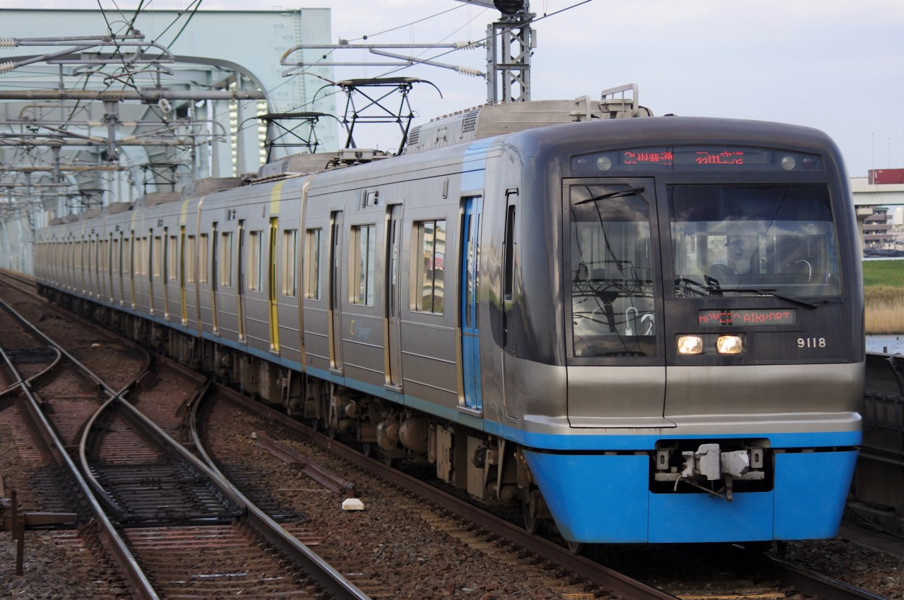
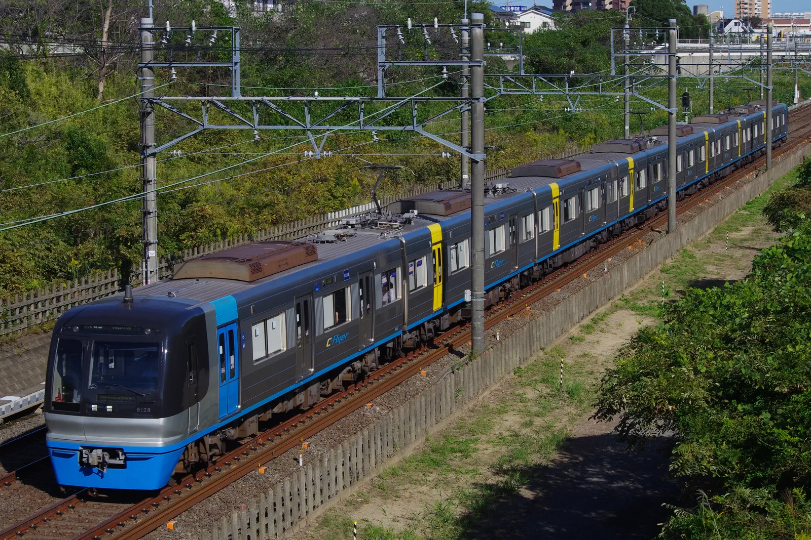
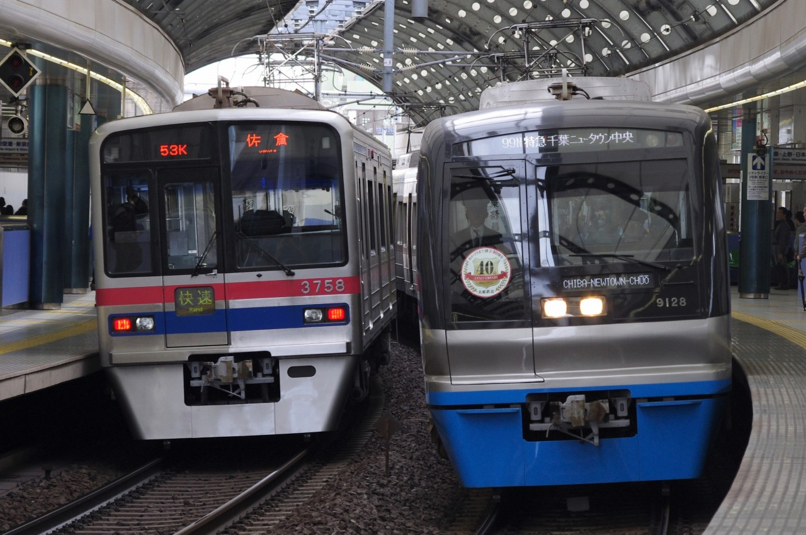
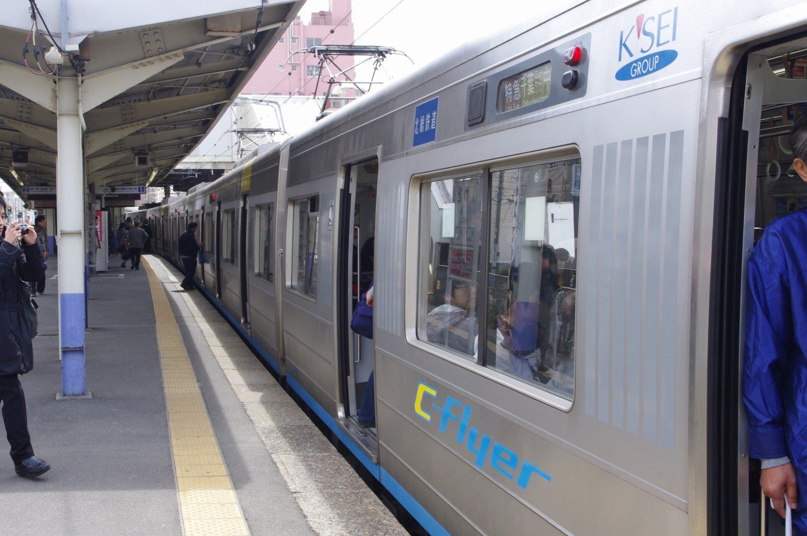

Tweet 千葉ニュータウン鉄道9100形 千葉ニュータウン中央～印西牧の原間開業に際し、1次車が1994年に導入された。独自の車体をしているが、機器類は京成3700形と同一設計である。C-Flyerの愛称を持っている。  9118編成 @八広 (2013/04/04)  9128編成 @西白井-新鎌ヶ谷 (2023/10/13)  ほくそう春まつり号(2012年) 9128編成 @京成船橋 (2012/03/31)  京成八幡に停車するほくそう春まつり号 (2012/03/31) Tweet